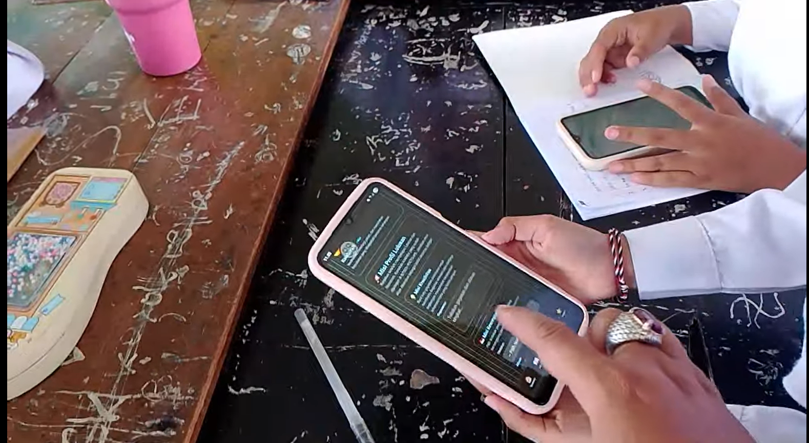
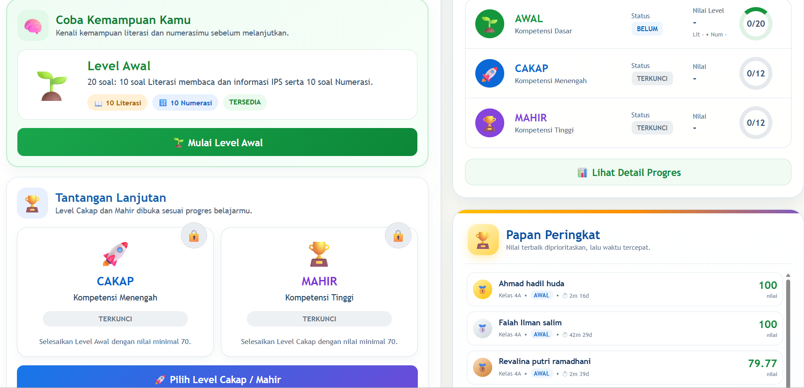

🎯
Masalah Pembelajaran
Pembelajaran IPS perlu menghubungkan literasi dan numerasi dengan konteks kehidupan masyarakat dan data yang bermakna.
Selengkapnya →Pembelajaran IPS perlu menghubungkan literasi dan numerasi dengan konteks kehidupan masyarakat dan data yang bermakna.
Selengkapnya →PIKTO-IPS menghadirkan pengalaman belajar digital yang kontekstual, interaktif, berbasis data, dan menyenangkan.
Selengkapnya →Dikembangkan menggunakan GitHub Pages, Google Apps Script, Spreadsheet, serta AI sebagai alat bantu pengembangan.
Selengkapnya →Sebelas pasangan data pretest–posttest digunakan untuk melihat perubahan hasil belajar setelah implementasi.
Selengkapnya →Portofolio disusun agar alur inovasi mudah dipahami: mulai dari kebutuhan, solusi, pelaksanaan, sampai bukti perubahan.
PIKTO-IPS adalah media pembelajaran digital interaktif untuk murid sekolah dasar yang mengintegrasikan konteks IPS, literasi membaca dan informasi, numerasi, piktogram, video interaktif, asesmen bertingkat, dan gamifikasi.
Murid membaca konteks, mengamati gambar dan data, menghitung, menalar, mengambil keputusan, kemudian menyelesaikan tantangan pembelajaran.
PIKTO-IPS dikembangkan dari kebutuhan pembelajaran IPS kelas IV untuk menghubungkan konteks kehidupan masyarakat dengan literasi, numerasi, penalaran, dan pengambilan keputusan melalui pengalaman belajar digital.
Pembelajaran IPS tidak hanya membutuhkan pemahaman materi. Murid juga perlu membaca informasi, mengamati data, melakukan perhitungan sederhana, menalar, dan mengambil keputusan berdasarkan konteks kehidupan sehari-hari.
Murid belajar melalui konteks IPS, aktivitas literasi, piktogram dan visualisasi data, numerasi, video interaktif, tantangan bertingkat, umpan balik digital, progres, badge, dan gamifikasi.
Berdasarkan 11 pasangan data pretest–posttest, rata-rata keseluruhan berubah dari 55,45 menjadi 66,56. Sebanyak 9 dari 11 murid (81,8%) memperoleh skor posttest keseluruhan yang lebih tinggi.
Teknologi dan koding ditempatkan untuk mendukung perjalanan belajar murid, bukan sekadar memperindah tampilan.
Murid mengenali informasi utama, membaca data sederhana, dan membangun pemahaman awal terhadap konteks IPS.
Murid membandingkan informasi, mengolah data, melakukan perhitungan, dan menjelaskan alasan berdasarkan bukti.
Murid mengintegrasikan literasi dan numerasi untuk menalar serta mengambil keputusan pada masalah kontekstual.
Sistem menghubungkan antarmuka pembelajaran, API, basis data, dan penyimpanan berkas untuk mendukung proses belajar secara terstruktur.
Frontend aplikasi: beranda, literasi, numerasi, tantangan, progres, dan interaksi murid.
HTML • CSS • JavaScript
API dan logika sistem: pengguna, progres, soal, jawaban, penilaian, refleksi, dan sinkronisasi.
Google Apps Script
Basis data pengguna, bank soal, progres, jawaban, hasil, dan refleksi.
Google Spreadsheet
Penyimpanan dokumen dan berkas pendukung proses pembelajaran.
Cloud Storage
AI digunakan sebagai alat bantu dalam proses pengembangan PIKTO-IPS. Keputusan pedagogis, verifikasi isi, pengujian aplikasi, dan implementasi tetap dilakukan oleh guru.
ChatGPT dimanfaatkan untuk membantu eksplorasi ide, penyusunan struktur materi, pengembangan aktivitas, dan perancangan alur pengalaman belajar PIKTO-IPS.
AI membantu pembuatan dan peninjauan draf kode serta pemecahan masalah teknis. Hasil AI diperiksa, disesuaikan, dan diuji sebelum diterapkan pada aplikasi.
AI membantu penyusunan storyboard, deskripsi prompt, algoritma, dan dokumentasi pengembangan. Validasi akhir tetap dilakukan oleh pengembang.
Dokumentasi pelaksanaan pembelajaran menggunakan PIKTO-IPS bersama murid.

Murid menggunakan PIKTO-IPS sebagai bagian dari proses pembelajaran IPS kelas IV.

PIKTO-IPS digunakan melalui Papan Interaktif Digital untuk mendukung eksplorasi materi, data, dan aktivitas kelas.

Tampilan aplikasi mendukung akses literasi, numerasi, asesmen bertingkat, progres, dan aktivitas pembelajaran.
Guru menyiapkan perangkat, jaringan internet, aplikasi, materi pembelajaran, orientasi penggunaan, dan pelaksanaan pretest.
Murid menjalani aktivitas literasi, membaca piktogram, melakukan numerasi, menalar, mengambil keputusan, dan menyelesaikan tantangan bertingkat.
Posttest dilakukan untuk melihat perubahan hasil. Data, progres, dan pengalaman implementasi digunakan sebagai bahan refleksi dan perbaikan.
Analisis menggunakan 11 pasangan data pretest dan posttest. Identitas murid pada data pendukung dianonimkan untuk menjaga privasi.
Sebelas murid memiliki data pretest dan posttest yang dapat dibandingkan.
Rata-rata keseluruhan berubah dari 55,45 menjadi 66,56.
9 dari 11 murid memperoleh skor posttest keseluruhan yang lebih tinggi, 1 tetap, dan 1 menurun.
Data menunjukkan perubahan pada kelompok murid yang mengikuti pengukuran dan tidak digunakan sebagai klaim sebab-akibat tunggal.
Rekap pretest–posttest disediakan sebagai bukti pendukung. Identitas murid telah dianonimkan untuk menjaga privasi.
🔒 Data murid dianonimkanPIKTO-IPS tidak berhenti pada pengembangan produk, tetapi dibagikan sebagai praktik baik dan terus disempurnakan berdasarkan hasil implementasi.
PIKTO-IPS telah dibagikan melalui kegiatan berbagi praktik baik di KKG Guslah 2. Kegiatan ini menjadi bagian dari diseminasi pengalaman pengembangan dan implementasi inovasi pembelajaran.
Hasil evaluasi menunjukkan perubahan pada literasi lebih besar dibandingkan numerasi. Temuan tersebut menjadi dasar untuk memperkuat aktivitas numerasi kontekstual, visualisasi data, umpan balik, dan variasi bank soal.
Pengembangan diarahkan pada penguatan dashboard guru, analisis data pembelajaran, bank soal, tampilan progres, optimalisasi pada berbagai perangkat, serta berbagi praktik melalui KKG dan komunitas belajar.
Dokumentasi PIKTO-IPS dan kegiatan berbagi praktik baik sebagai bagian dari bukti pendukung portofolio.
▶ Tonton Video DokumentasiLaporan, storyboard, algoritma, video, dan data dampak disajikan dalam satu pusat akses agar bukti inovasi dapat ditelusuri dengan mudah dan transparan.